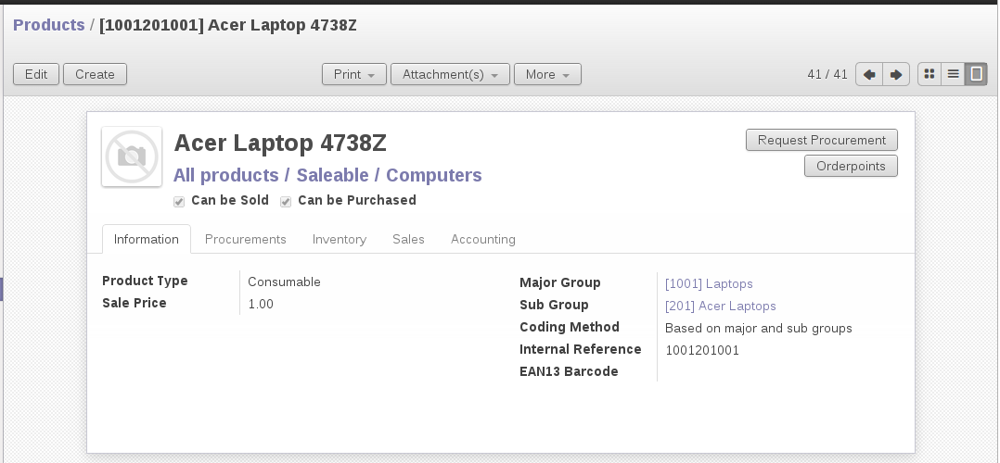

<section class="oe_container">
    <div class="oe_row oe_spaced">
        <div class="oe_span12">
            <h2 class="oe_slogan">Product Coding</h2>
            <h3 class="oe_slogan">Autogeneration of internal reference of a product.</h3>
        </div>
        <div class="oe_span6">
            <div class="oe_demo oe_picture oe_screenshot">
                <a href="https://www.openerp.com">
                    
                </a>
                <div class="oe_demo_footer oe_centeralign">Online Demo</div>
            </div>
        </div>
        <div class="oe_span6">
            <p class="oe_mt32">
            An automatic Internal Reference of the product is generated depending on the coding method you select on a product. Allows two ways of coding:
            <ul class="simple">
                <li>Based on product categories</li>
                <li>Based on major and sub groups</li>
            </ul>
            You can also create major and sub groups of products and based on the code provided on those groups it creates an internal reference of a product by combining both.
            </p>
            <div class="oe_centeralign oe_websiteonly">
                <a href="mailto:sales@openerp.com" class="oe_button oe_big oe_tacky">Contact Us</a>
            </div>
        </div>
    </div>
</section>
